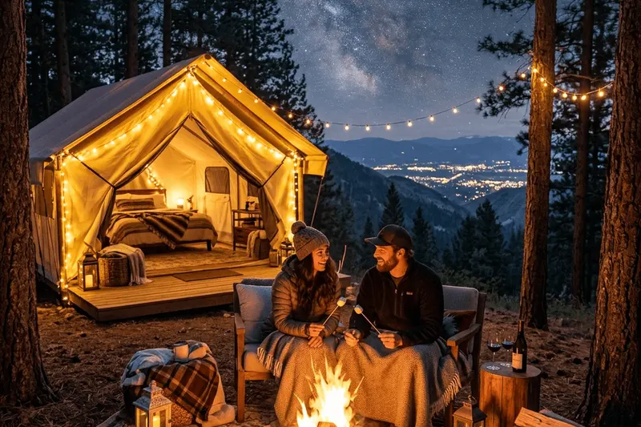

Biaya glamping mewah di Batu Malang dipengaruhi musim kunjungan, tipe tenda, fasilitas, dan paket layanan, sehingga tarif setiap pengelola bisa berbeda cukup jauh.
- Tarif glamping mewah tidak seragam dan bergantung pada tipe tenda serta fasilitas.
- Akhir pekan dan libur panjang umumnya lebih mahal dibanding hari biasa.
- Periksa komponen yang sudah termasuk dalam harga sebelum membandingkan.
- Biaya tambahan seperti tamu ekstra dan aktivitas bisa menaikkan total pengeluaran.
- Pemesanan dini dan fleksibilitas tanggal membantu menekan anggaran.
Batu berjarak sekitar 20 kilometer dari pusat Kota Malang (sumber: perkiraan jarak umum peta digital, kondisi saat ini). Jarak yang relatif dekat ini membuat banyak wisatawan menggabungkan glamping dengan kegiatan di Malang Raya, sehingga biaya transportasi dan makan ikut perlu dihitung.
Apa yang Menentukan Biaya Glamping Mewah di Batu Malang?
Biaya glamping mewah di Batu Malang ditentukan oleh lokasi, tipe tenda, kapasitas, fasilitas privat, musim kunjungan, dan layanan tambahan yang disertakan pengelola.
Lokasi dengan pemandangan terbuka atau akses eksklusif cenderung lebih mahal. Tenda berkapasitas besar atau yang dilengkapi jacuzzi juga memiliki tarif lebih tinggi daripada tenda standar.
Reputasi pengelola, kualitas bahan tenda, dan tingkat privasi ikut memengaruhi harga. Karena itu, tarif tinggi tidak selalu berarti lebih baik bagi setiap pengunjung, dan tarif rendah tidak selalu berarti kualitas buruk.
Berapa Selisih Tarif Hari Biasa dan Akhir Pekan?
Tarif akhir pekan dan libur panjang umumnya lebih tinggi daripada hari biasa karena permintaan meningkat, meskipun besarnya selisih berbeda di setiap pengelola.
Kota Batu adalah destinasi favorit wisatawan dari Jawa Timur dan luar daerah. Saat libur sekolah, libur nasional, atau cuti bersama, ketersediaan tenda cepat berkurang.
Pengunjung yang fleksibel dapat memilih menginap pada hari kerja agar mendapat tarif lebih bersahabat dan suasana lebih tenang. Tanyakan langsung kepada pengelola mengenai kalender tarif untuk bulan yang diinginkan.
Apa Saja Komponen yang Biasanya Termasuk dalam Tarif?
Komponen tarif glamping mewah biasanya mencakup tempat menginap, kamar mandi pribadi, dan listrik, sedangkan sarapan, aktivitas, dan parkir bisa termasuk atau dikenakan biaya terpisah.
Sebelum membandingkan harga, buat daftar pertanyaan berikut:
- Apakah sarapan sudah termasuk, dan untuk berapa orang?
- Apakah ada tiket aktivitas atau peralatan api unggun?
- Apakah ada biaya parkir atau biaya kebersihan?
- Apakah pajak dan biaya layanan sudah masuk dalam harga?
- Apakah ada batas jumlah tamu per tenda?
Dua penawaran dengan harga hampir sama bisa memberi nilai berbeda jika cakupan layanannya tidak sama.
Biaya Tambahan Apa yang Sering Terlewat?
Biaya tambahan yang sering terlewat meliputi tamu ekstra, kasur tambahan, makan malam, aktivitas berbayar, dekorasi acara, dan biaya pemesanan di platform pihak ketiga.
Selain itu, pengunjung perlu memperhitungkan biaya bahan bakar, tiket wisata sekitar, dan konsumsi di luar lokasi. Pada perjalanan keluarga, biaya makan dan transportasi sering lebih besar dari perkiraan awal.
Mintalah rincian tertulis melalui pesan resmi atau kanal pemesanan agar tidak ada kesalahpahaman saat check-in.
Bagaimana Cara Menghemat Biaya Glamping Tanpa Mengorbankan Kenyamanan?
Cara menghemat biaya glamping adalah memesan lebih awal, menginap di hari kerja, memilih tenda sesuai kapasitas, dan memanfaatkan paket yang sudah mencakup sarapan atau aktivitas.
Berikut langkah praktisnya:
- Bandingkan setidaknya tiga pengelola dengan kriteria yang sama.
- Pilih tenda sesuai jumlah tamu agar tidak membayar ruang berlebih.
- Tanyakan promo untuk durasi menginap dua malam atau lebih.
- Hindari membeli aktivitas yang tidak akan digunakan.
- Gunakan kanal pemesanan resmi untuk menghindari biaya perantara.
Penghematan terbaik datang dari perencanaan, bukan dari memilih penginapan dengan fasilitas yang tidak sesuai kebutuhan.
Apakah Tarif Murah Berarti Kualitas Rendah?
Tarif murah tidak selalu berarti kualitas rendah, tetapi pengunjung perlu memeriksa kebersihan, keamanan, dan fasilitas dasar sebelum memesan glamping dengan harga jauh di bawah rata-rata.
Periksa ulasan terbaru, foto asli dari tamu, dan respons pengelola terhadap pertanyaan. Tarif yang sangat rendah bisa disebabkan oleh promo, lokasi lebih jauh, atau fasilitas terbatas.
Nilai terbaik muncul ketika harga, fasilitas, lokasi, dan pelayanan seimbang dengan kebutuhan pengunjung. Gambaran umum pemilihan lokasi dapat dibaca di panduan glamping mewah di Batu Malang.
Biaya glamping mewah di Batu Malang dipengaruhi lokasi, tipe tenda, musim, dan paket layanan. Bandingkan komponen yang termasuk, bukan hanya angka akhir.
Pesan lebih awal, pilih hari kerja bila memungkinkan, dan minta rincian biaya secara jelas. Dengan cara ini, anggaran liburan tetap terkendali dan pengalaman menginap tetap nyaman.